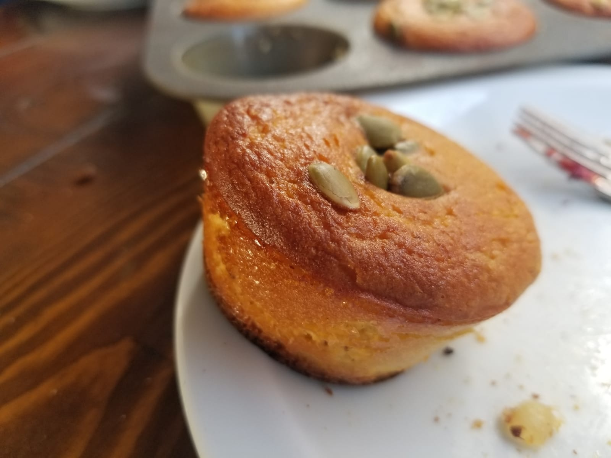
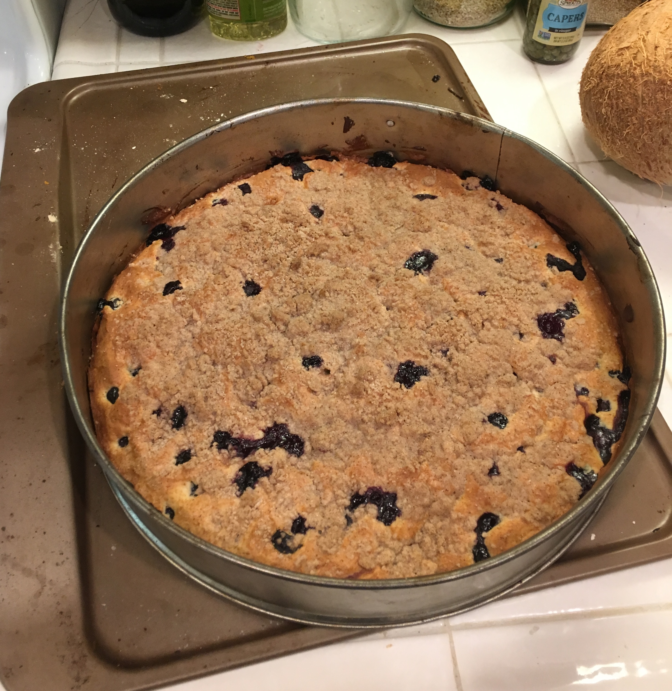

Index
Pumpkin Muffins

The beautiful finished product!
Ingredients
- 1 cup pumpkin puree
- 6 large eggs
- 1/2 cup buttermilk
- 2 tablespoons coconut oil
- 1/cup sweet stuff (I used 2 dates, tbsp of sugar and tbsp of syrup)
- 2 teaspoons vanilla extract (optional)
- 2 cups almond flour
- 2 teaspoons baking powder
- 1/2 cup pumpkin seeds sprinkled on the top.
Instructions
Mix everything except the seeds in the blender. Set oven to 350º F.
Then pour the batter into greased muffin baking pan. Bake until golden brown.
Blueberry Coffeecake

Another beautiful finished product!
Ingredients
Streusel
- 1/3 cup sugar
- 1/2 cup King Arthur Unbleached All-Purpose Flour
- 1 teaspoon ground cinnamon
- 1/8 teaspoon salt
- 1/4 cup (4 tablespoons) butter
Cake
- 2 cups King Arthur Unbleached All-Purpose Flour
- 2 teaspoons baking powder
- 1/2 teaspoon salt
- 3/4 cup sugar
- 1/4 cup (4 tablespoons) butter
- 1 large egg
- 1 teaspoon vanilla extract
- 1/2 cup milk
- 2 cups fresh or frozen blueberries
Instructions
Combine all the ingredients for streusel together. Mix until crumble-y. Set aside. Preheat oven to 375 F. Work on cake batter.
Combine dry ingredients in bowl, with wet, except milk, in another. Combine these two bowls while adding milk and blueberries until mixed.
Pour into ~8 in. greased pan. Cook for ~40 min.
See
this website for more details.